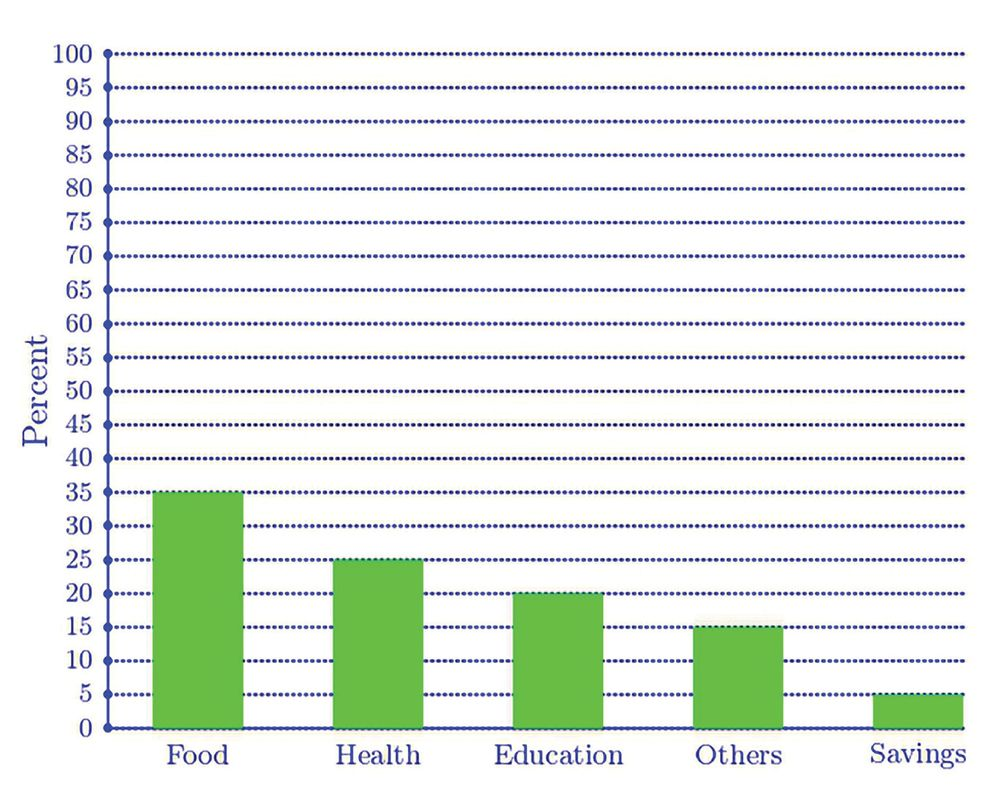
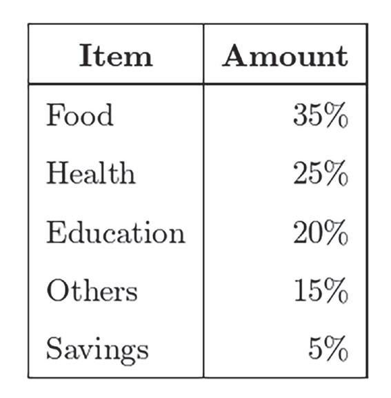
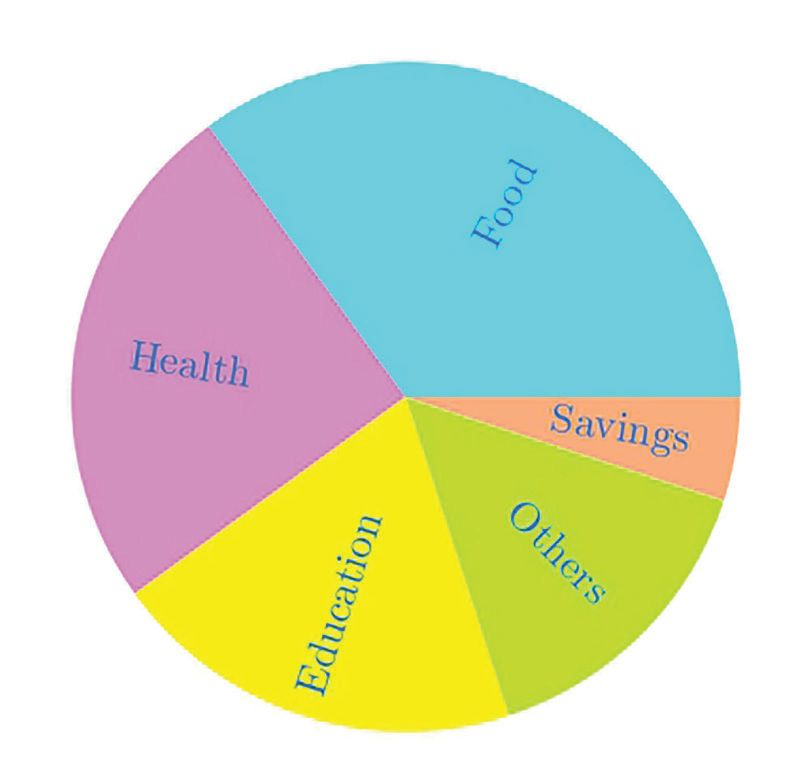
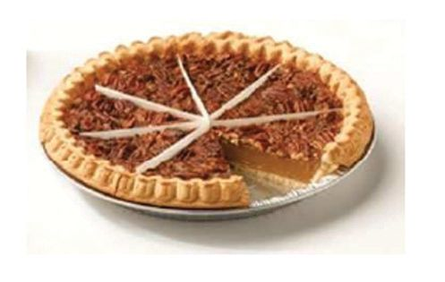
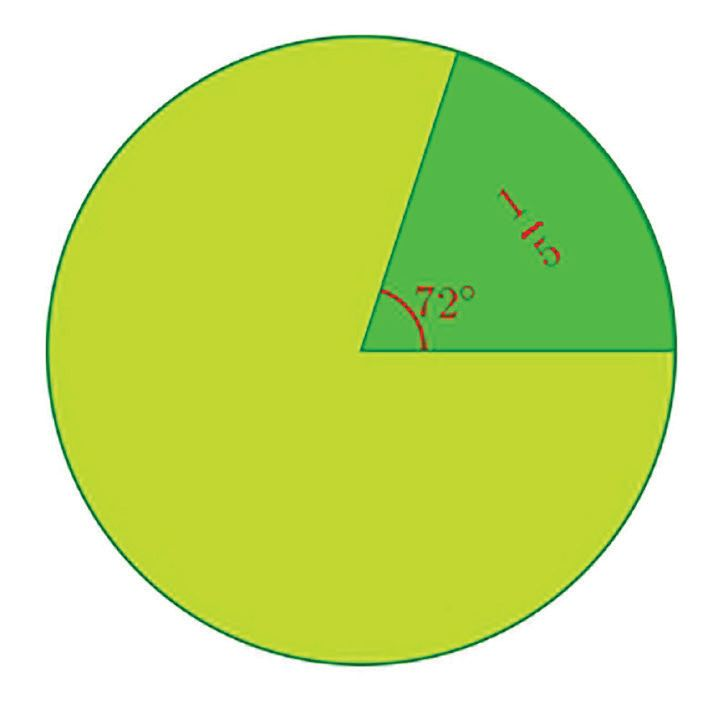
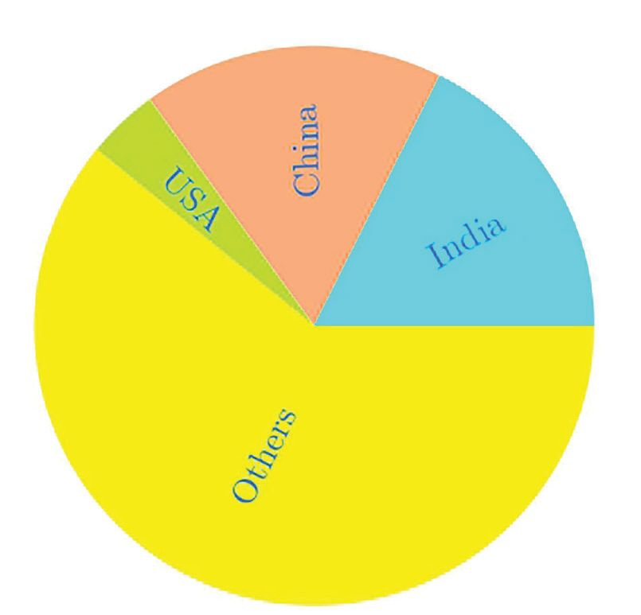
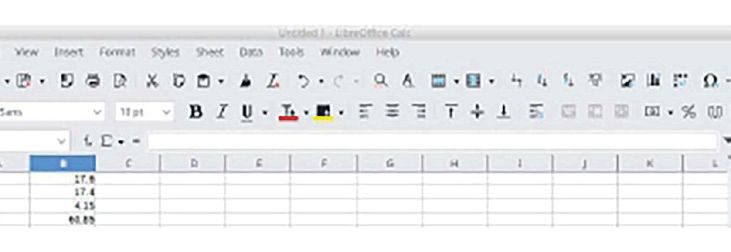
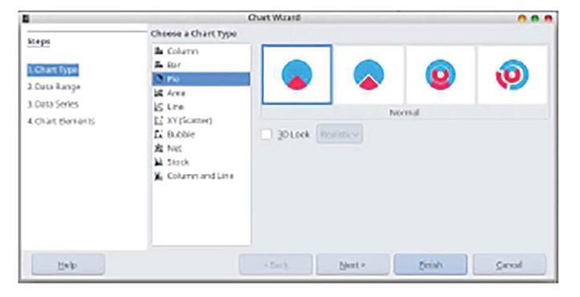
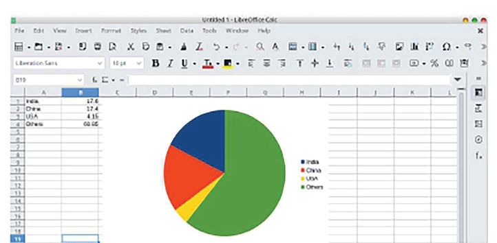
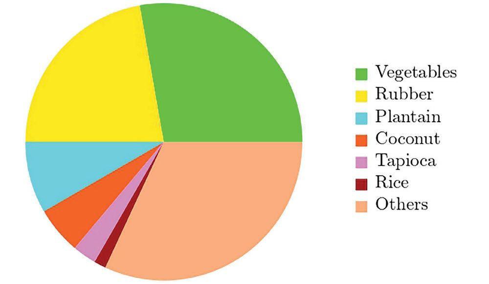

Data Pictures
14 Data Pictures The table below shows the various expenses in a household, as percents of the total:
We have seen in class 5, how this can be shown as a bar graph:
191
Standard - VII
191



Data Pictures
14 Data Pictures The table below shows the various expenses in a household, as percents of the total:
We have seen in class 5, how this can be shown as a bar graph:
191
Standard - VII
191



Mathematics
From this picture, we can easily see the differences in the expenses for different things. But we cannot see at a glance, approximately what fraction of the whole are the expenses for various items or what fraction of the expense for one item is another. Now look at another representation of the same data:
From this picture, we cannot only see that the most amount is spent on food, but also that it is about a third of the total expenses. Again, we can see that a quarter of the total expenses is related to health. Such a picture is called a pie chart How is this picture drawn?
Food for thought Pie is a baked dish much popular in western countries:
Remember how we marked 15 of a circle, by drawing an angle of 15 × 360° = 72° at the centre?
It is shared by cutting into pieces as in the picture. Hence the name pie chart
192
Standard - VII
192




Data Pictures
35 = 7 In our table of expenses, the expenditure on food is 100 20 of the total, right? To mark this part of a circle, what angle should we take at the centre? 7 20 × 360° = 126°
Can you compute the angle for each of the expenses and draw the pie chart? Let’s look at another pie chart. The most populous countries of the world are first India, then China and the third the United States of America. The pie chart below shows these and the population of the remaining countries as Computer pictures parts of the total population of the world: The populations of India, China and the USA are computed as 17.6%, 17.4% and 4.15%. It is not easy for us to draw a pie chart using such numbers. But we can use a computer to do it. First we type this data in Libre Office Calc:
Can you answer these questions using this picture?
Then we click on the icon on the top right and in the dialogue window which opens up, choose the option Pie Chart in the Chart Type menu:
•
Approximately what fraction of the world population is that of India?
•
What about the population of China?
•
Approximately what fraction of the population We get the pie chart below: of India is that of the USA?
•
Approximately what fraction of the world population is the combined population of India, China and the USA?
193
Standard - VII
193


Mathematics
What other facts can you get from this pie chart? Now try these problems: (1) The pie chart below shows how the total cultivable land in a panchayat is utilised
for different kinds of crops:
(i)
For which crop is most of the land used? Approximately what fraction of the total is this?
(ii)
For which crop is the least amount of land used? Approximately what fraction of the total is this?
(iii)
Approximately what fraction of the total is used for rubber?
(2) In a class of 40 students, 20 use the school bus, 15 walk to the school and 5 ride
bicycles to school. Draw a pie chart showing this. (3) In a class 25% got A grade in a math test, 40% got B grade, 20% got C grade and
the remaining D grade. Draw a pie chart showing this.
194
Standard - VII
194
Notes
Notes
Notes
Notes